Week 3 Packages and the ‘tidyverse’
3.1 Day 15 (Monday) Zoom check-in
Review and troubleshoot (15 minutes)
Over the weekend, I wrote two functions. The first retrieves and ‘cleans’ the US data set.
get_US_data <-
function()
{
## retrieve data from the internet
url <- "https://raw.githubusercontent.com/nytimes/covid-19-data/master/us-counties.csv"
us <- read.csv(url, stringsAsFactors = FALSE)
## update 'date' from character vector to 'Date'. this is the
## last line of executed code in the function, so the return
## value (the updated 'us' object) is returned by the functino
within(us, {
date = as.Date(date, format = "%Y-%m-%d")
})
}The second plots data for a particular county and state
plot_county <-
function(us_data, county_of_interest = "Erie", state_of_interest = "New York")
{
## create the title for the plot
main_title <- paste(
"New Cases,", county_of_interest, "County", state_of_interest
)
## subset the us data to just the county and state of interest
county_data <- subset(
us_data,
(county == county_of_interest) & (state == state_of_interest)
)
## calculate new cases for particular county and state
county_data <- within(county_data, {
new_cases <- diff( c(0, cases) )
})
## plot
plot( new_cases ~ date, county_data, log = "y", main = main_title)
}I lived in Seattle (King County, Washington), for a while, and this is where the first serious outbreak occurred. Here’s the relevant data:
us <- get_US_data()
plot_county(us, "King", "Washington")
## Warning in xy.coords(x, y, xlabel, ylabel, log): 1 y value <= 0 omitted from
## logarithmic plot
Packages (20 minutes)
Base R
R consists of ‘packages’ that implement different functionality. Each package contains functions that we can use, and perhaps data sets (like the
mtcars) data set from Friday’s presentation) and other resources.R comes with several ‘base’ packages installed, and these are available in a new R session.
Discover packages that are currently available using the
search()function. This shows that the ‘stats’, ‘graphics’, ‘grDevices’, ‘utils’, ‘datasets’, ‘methods’, and ‘base’ packages, among others, are available in our current R session.When we create a variable like
R creates a new symbol in the
.GlobalEnvlocation on the search path.When we evaluate a function like
length(x)…R searches for the function
length()along thesearch()path. It doesn’t findlength()in the.GlobalEnv(because we didn’t define it there), or in the ‘stats’, ‘graphics’, … packages. Eventually, R finds the definition oflengthin the ‘base’ package.R then looks for the definition of
x, finds it in the.GlobalEnv.Finally, R applies the definition of
lengthfound in the base package to the value ofxfound in the.GlobalEnv.
Contributed packages
R would be pretty limited if it could only do things that are defined in the base packages.
It is ‘easy’ to write a package, and to make the package available for others to use.
A major repository of contributed packages is CRAN – the Comprehensive R Archive Network. There are more than 15,000 packages in CRAN.
Many CRAN packages are arranged in task views that highlight the most useful packages.
Installing and attaching packages
There are too many packages for all to be distributed with R, so it is necessary to install contributed packages that you might find interesting.
once a package is installed (you only need to install a package once), it can be ‘loaded’ and ‘attached’ to the search path using
library().As an exercise, try to attach the ‘readr’, ‘dplyr’, and ‘ggplot2’ packages
If any of these fails with a message like
it means that the package has not been installed (or that you have a typo in the name of the library!)
Install any package that failed when
library()was called withAlternatively, use the RStudio interface to select (in the lower right panel, by default) the ‘Packages’ tab, ‘Install’ button.

One package may use functions from one or more other packages, so when you install, for instance ‘dplyr’, you may actually install several packages.
The ‘tidyverse’ of packages (20 minutes)
The ‘tidyverse’ of packages provides a very powerful paradigm for working with data.
Based on the idea that a first step in data analysis is to transform the data into a standard format. Subsequent steps can then be accomplished in a much more straight-forward way, using a small set of functions.
Hadley Wickham’s ‘Tidy Data’ paper provides a kind of manifesto for what constitutes tidy data:
- Each variable forms a column.
- Each observation forms a row.
- Each type of observational unit forms a table
We’ll look at the readr package for data input, and the dplyr package for essential data manipulation.
readr for fast data input
Load (install if necessary!) and attach the readr package
Example: US COVID data. N.B.,
readr::read_csv()rather thanread.csv()url <- "https://raw.githubusercontent.com/nytimes/covid-19-data/master/us-counties.csv" us <- read_csv(url) ## Parsed with column specification: ## cols( ## date = col_date(format = ""), ## county = col_character(), ## state = col_character(), ## fips = col_character(), ## cases = col_double(), ## deaths = col_double() ## ) us ## # A tibble: 112,572 x 6 ## date county state fips cases deaths ## <date> <chr> <chr> <chr> <dbl> <dbl> ## 1 2020-01-21 Snohomish Washington 53061 1 0 ## 2 2020-01-22 Snohomish Washington 53061 1 0 ## 3 2020-01-23 Snohomish Washington 53061 1 0 ## 4 2020-01-24 Cook Illinois 17031 1 0 ## 5 2020-01-24 Snohomish Washington 53061 1 0 ## 6 2020-01-25 Orange California 06059 1 0 ## 7 2020-01-25 Cook Illinois 17031 1 0 ## 8 2020-01-25 Snohomish Washington 53061 1 0 ## 9 2020-01-26 Maricopa Arizona 04013 1 0 ## 10 2020-01-26 Los Angeles California 06037 1 0 ## # … with 112,562 more rowsThe
usdata is now represented as atibble: a nicerdata.frameNote that
datehas been deduced correctlyread_csv()does not coerce inputs tofactor(no need to usestringsAsFactors = FALSE)- The tibble displays nicely (first ten lines, with an indication of total lines)
dplyr for data manipulation
Load and attach the dplyr package.
dplyr implements a small number of verbs for data transformation
- A small set of functions that allow very rich data transformation
- All have the same first argument – the
tibbleto be transformed - All allow ‘non-standard’ evaluation – use the variable name without quotes
".
filter()rows that meet specific criteriafilter(us, state == "New York", county == "Erie") ## # A tibble: 50 x 6 ## date county state fips cases deaths ## <date> <chr> <chr> <chr> <dbl> <dbl> ## 1 2020-03-15 Erie New York 36029 3 0 ## 2 2020-03-16 Erie New York 36029 6 0 ## 3 2020-03-17 Erie New York 36029 7 0 ## 4 2020-03-18 Erie New York 36029 7 0 ## 5 2020-03-19 Erie New York 36029 28 0 ## 6 2020-03-20 Erie New York 36029 31 0 ## 7 2020-03-21 Erie New York 36029 38 0 ## 8 2020-03-22 Erie New York 36029 54 0 ## 9 2020-03-23 Erie New York 36029 87 0 ## 10 2020-03-24 Erie New York 36029 107 0 ## # … with 40 more rowsdplyr uses the ‘pipe’
%>%as a way to chain data and functions togetherus %>% filter(state == "New York", county == "Erie") ## # A tibble: 50 x 6 ## date county state fips cases deaths ## <date> <chr> <chr> <chr> <dbl> <dbl> ## 1 2020-03-15 Erie New York 36029 3 0 ## 2 2020-03-16 Erie New York 36029 6 0 ## 3 2020-03-17 Erie New York 36029 7 0 ## 4 2020-03-18 Erie New York 36029 7 0 ## 5 2020-03-19 Erie New York 36029 28 0 ## 6 2020-03-20 Erie New York 36029 31 0 ## 7 2020-03-21 Erie New York 36029 38 0 ## 8 2020-03-22 Erie New York 36029 54 0 ## 9 2020-03-23 Erie New York 36029 87 0 ## 10 2020-03-24 Erie New York 36029 107 0 ## # … with 40 more rowsThe pipe works by transforming whatever is on the left-hand side of the
%>%to the first argument of the function on the right-hand side.Like
filter(), most dplyr functions take as their first argument a tibble, and return a tibble. So the functions can be chained together, as in the following example.
select()specific columnsus %>% filter(state == "New York", county == "Erie") %>% select(state, county, date, cases) ## # A tibble: 50 x 4 ## state county date cases ## <chr> <chr> <date> <dbl> ## 1 New York Erie 2020-03-15 3 ## 2 New York Erie 2020-03-16 6 ## 3 New York Erie 2020-03-17 7 ## 4 New York Erie 2020-03-18 7 ## 5 New York Erie 2020-03-19 28 ## 6 New York Erie 2020-03-20 31 ## 7 New York Erie 2020-03-21 38 ## 8 New York Erie 2020-03-22 54 ## 9 New York Erie 2020-03-23 87 ## 10 New York Erie 2020-03-24 107 ## # … with 40 more rows
Other common verbs (see tomorrow’s quarantine)
mutate()(add or update) columnssummarize()one or more columnsgroup_by()one or more variables when performing computations.ungroup()removes the grouping.arrange()rows based on values in particular column(s);desc()in descending order.count()the number of times values occur
Other ‘tidyverse’ packages
Packages adopting the ‘tidy’ approach to data representation and management are sometimes referred to as the tidyverse.
ggplot2 implements high-quality data visualization in a way consistent with tidy data representations.
The tidyr package implements functions that help to transform data to ‘tidy’ format; we’ll use
pivot_longer()later in the week.
3.2 Day 16 Key tidyverse packages: readr and dplyr
Start a script for today. In the script
Load the libraries that we will use
If R responds with (similarly for dplyr)
Error in library(readr) : there is no package called 'readr'then you’ll need to install (just once per R installation) the readr pacakge
Work through the following commands, adding appropriate lines to your script
Read US COVID data. N.B.,
readr::read_csv()rather thanread.csv()url <- "https://raw.githubusercontent.com/nytimes/covid-19-data/master/us-counties.csv" us <- read_csv(url) ## Parsed with column specification: ## cols( ## date = col_date(format = ""), ## county = col_character(), ## state = col_character(), ## fips = col_character(), ## cases = col_double(), ## deaths = col_double() ## ) us ## # A tibble: 112,572 x 6 ## date county state fips cases deaths ## <date> <chr> <chr> <chr> <dbl> <dbl> ## 1 2020-01-21 Snohomish Washington 53061 1 0 ## 2 2020-01-22 Snohomish Washington 53061 1 0 ## 3 2020-01-23 Snohomish Washington 53061 1 0 ## 4 2020-01-24 Cook Illinois 17031 1 0 ## 5 2020-01-24 Snohomish Washington 53061 1 0 ## 6 2020-01-25 Orange California 06059 1 0 ## 7 2020-01-25 Cook Illinois 17031 1 0 ## 8 2020-01-25 Snohomish Washington 53061 1 0 ## 9 2020-01-26 Maricopa Arizona 04013 1 0 ## 10 2020-01-26 Los Angeles California 06037 1 0 ## # … with 112,562 more rowsfilter()rows that meet specific criteriaus %>% filter(state == "New York", county == "Erie") ## # A tibble: 50 x 6 ## date county state fips cases deaths ## <date> <chr> <chr> <chr> <dbl> <dbl> ## 1 2020-03-15 Erie New York 36029 3 0 ## 2 2020-03-16 Erie New York 36029 6 0 ## 3 2020-03-17 Erie New York 36029 7 0 ## 4 2020-03-18 Erie New York 36029 7 0 ## 5 2020-03-19 Erie New York 36029 28 0 ## 6 2020-03-20 Erie New York 36029 31 0 ## 7 2020-03-21 Erie New York 36029 38 0 ## 8 2020-03-22 Erie New York 36029 54 0 ## 9 2020-03-23 Erie New York 36029 87 0 ## 10 2020-03-24 Erie New York 36029 107 0 ## # … with 40 more rowsselect()specific columnsus %>% filter(state == "New York", county == "Erie") %>% select(state, county, date, cases) ## # A tibble: 50 x 4 ## state county date cases ## <chr> <chr> <date> <dbl> ## 1 New York Erie 2020-03-15 3 ## 2 New York Erie 2020-03-16 6 ## 3 New York Erie 2020-03-17 7 ## 4 New York Erie 2020-03-18 7 ## 5 New York Erie 2020-03-19 28 ## 6 New York Erie 2020-03-20 31 ## 7 New York Erie 2020-03-21 38 ## 8 New York Erie 2020-03-22 54 ## 9 New York Erie 2020-03-23 87 ## 10 New York Erie 2020-03-24 107 ## # … with 40 more rowsmutate()(add or update) columnserie <- us %>% filter(state == "New York", county == "Erie") erie %>% mutate(new_cases = diff(c(0, cases))) ## # A tibble: 50 x 7 ## date county state fips cases deaths new_cases ## <date> <chr> <chr> <chr> <dbl> <dbl> <dbl> ## 1 2020-03-15 Erie New York 36029 3 0 3 ## 2 2020-03-16 Erie New York 36029 6 0 3 ## 3 2020-03-17 Erie New York 36029 7 0 1 ## 4 2020-03-18 Erie New York 36029 7 0 0 ## 5 2020-03-19 Erie New York 36029 28 0 21 ## 6 2020-03-20 Erie New York 36029 31 0 3 ## 7 2020-03-21 Erie New York 36029 38 0 7 ## 8 2020-03-22 Erie New York 36029 54 0 16 ## 9 2020-03-23 Erie New York 36029 87 0 33 ## 10 2020-03-24 Erie New York 36029 107 0 20 ## # … with 40 more rowssummarize()one or more columnserie %>% mutate(new_cases = diff(c(0, cases))) %>% summarize( duration = n(), total_cases = max(cases), max_new_cases_per_day = max(new_cases), mean_new_cases_per_day = mean(new_cases), median_new_cases_per_day = median(new_cases) ) ## # A tibble: 1 x 5 ## duration total_cases max_new_cases_per… mean_new_cases_per… median_new_cases_… ## <int> <dbl> <dbl> <dbl> <dbl> ## 1 50 3710 217 74.2 68group_by()one or more variables when performing computationsarrange()based on a particular column;desc()in descending order.us_county_cases %>% arrange(desc(total_cases)) ## # A tibble: 2,914 x 3 ## # Groups: county [1,703] ## county state total_cases ## <chr> <chr> <dbl> ## 1 New York City New York 174341 ## 2 Cook Illinois 42324 ## 3 Nassau New York 36780 ## 4 Suffolk New York 34855 ## 5 Westchester New York 29884 ## 6 Los Angeles California 25662 ## 7 Wayne Michigan 17298 ## 8 Bergen New Jersey 16185 ## 9 Philadelphia Pennsylvania 15854 ## 10 Hudson New Jersey 15769 ## # … with 2,904 more rows us_state_cases %>% arrange(desc(total_cases)) ## # A tibble: 55 x 2 ## state total_cases ## <chr> <dbl> ## 1 New York 318537 ## 2 New Jersey 130969 ## 3 Massachusetts 68087 ## 4 Illinois 61627 ## 5 California 55075 ## 6 Pennsylvania 52082 ## 7 Michigan 43782 ## 8 Florida 36074 ## 9 Texas 32312 ## 10 Connecticut 29512 ## # … with 45 more rowscount()the number of times values occur (duration of the pandemic?)us %>% count(county, state) %>% arrange(desc(n)) ## # A tibble: 2,914 x 3 ## county state n ## <chr> <chr> <int> ## 1 Snohomish Washington 104 ## 2 Cook Illinois 101 ## 3 Orange California 100 ## 4 Los Angeles California 99 ## 5 Maricopa Arizona 99 ## 6 Santa Clara California 94 ## 7 Suffolk Massachusetts 93 ## 8 San Francisco California 92 ## 9 Dane Wisconsin 89 ## 10 San Diego California 84 ## # … with 2,904 more rows
3.3 Day 17 Visualization with ggplot2
Setup
Load packages we’ll use today
Remember that packages need to be installed before loading; if you see…
…then you’ll need to install the package and try again
Input data using readr::read_csv()
url <- "https://raw.githubusercontent.com/nytimes/covid-19-data/master/us-counties.csv"
us <- read_csv(url)
## Parsed with column specification:
## cols(
## date = col_date(format = ""),
## county = col_character(),
## state = col_character(),
## fips = col_character(),
## cases = col_double(),
## deaths = col_double()
## )Create the Erie county subset, with columns new_cases and new_deaths
ggplot2 essentials
The ‘gg’ in ggplot2
‘Grammar of Graphics’ – a formal, scholarly system for describing and creating graphics.
See the usage guide, and the data visualization chapter of R for Data Science.
The reference section of the usage guide provides a good entry point
A first plot
Specify the data to use. Do this by (a) providing the tibble containing the data (
erie) and (b) communicating the ‘aesthetics’ of the overall graph by specifying thexandydata columns –ggplot(erie, aes(x = date, y = new_cases))Add a
geom_describing the geometric object used to represent the data, e.g., usegeom_point()to represent the data as points.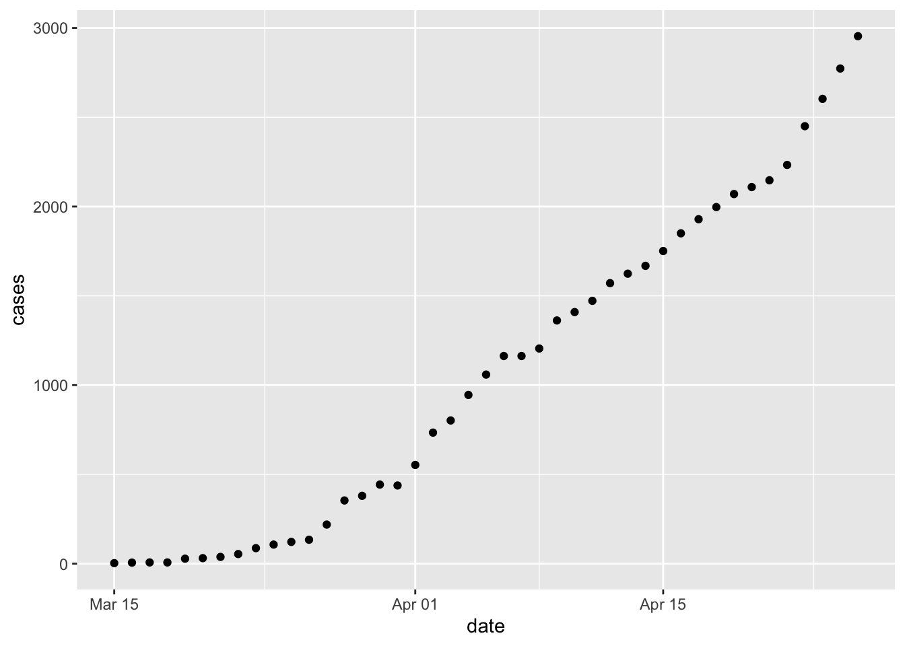
Note that the plot is assembled by adding elements using a simple
+. Connect the points withgeom_line().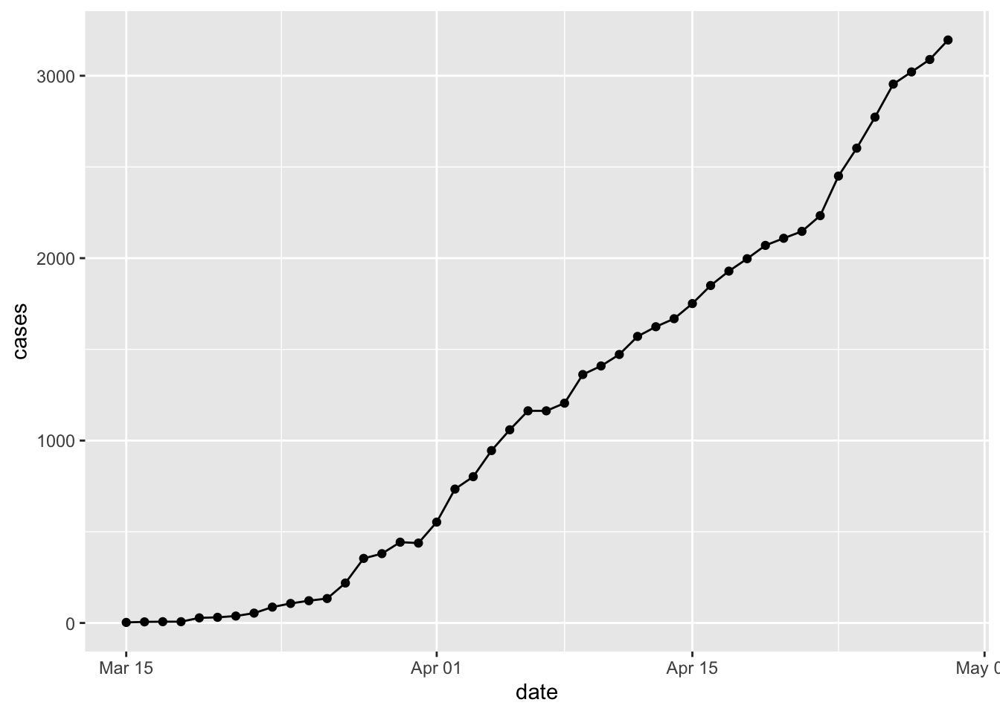
Plots can actually be captured in a variable, e.g.,
p… and then updated and displayed
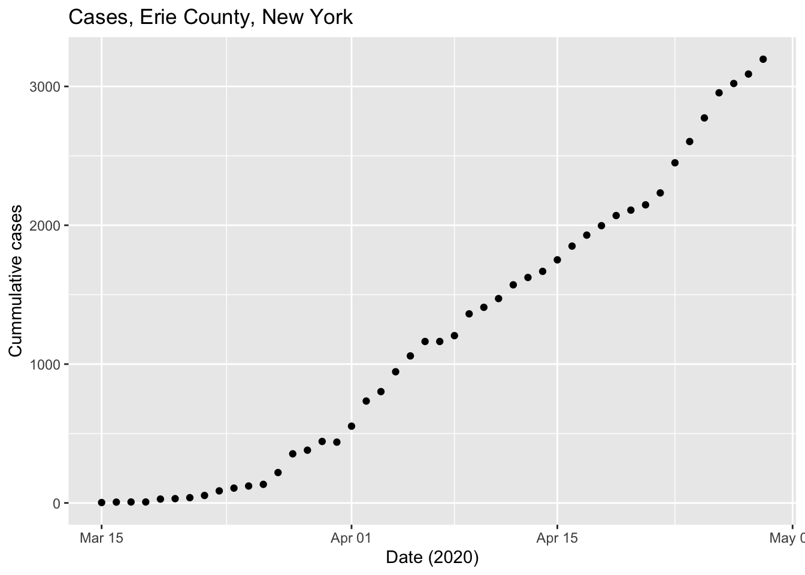
Arguments to each
geominfluece how the geometry is displayed, e.g.,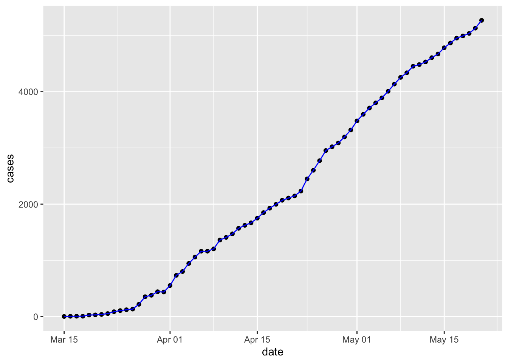
COVID-19 in Erie county
New cases
Create a base plot using
new_cases)Visualize on a linear and a log-transformed y-axis

p + scale_y_log10() ## Warning in self$trans$transform(x): NaNs produced ## Warning: Transformation introduced infinite values in continuous y-axis ## Warning: Removed 1 rows containing missing values (geom_point).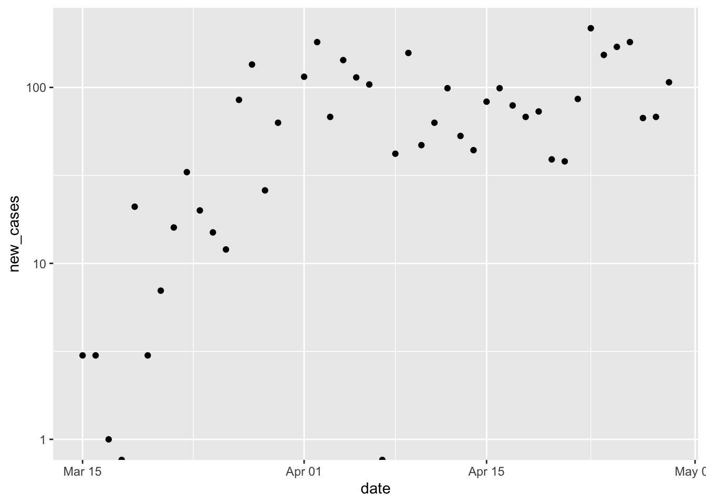
Add a smoothed line to the plot. By default the smoothed line is a local regression appropriate for exploratory data analysis. Note the confidence bands displayed in the plot, and how they convey a measure of certainty about the fit.
p + scale_y_log10() + geom_smooth() ## Warning in self$trans$transform(x): NaNs produced ## Warning: Transformation introduced infinite values in continuous y-axis ## Warning in self$trans$transform(x): NaNs produced ## Warning: Transformation introduced infinite values in continuous y-axis ## `geom_smooth()` using method = 'loess' and formula 'y ~ x' ## Warning: Removed 3 rows containing non-finite values (stat_smooth). ## Warning: Removed 1 rows containing missing values (geom_point).
Reflect on the presentation of data, especially how log-transformation and a clarifies our impression of the local progress of the pandemic.
The local regression used by
geom_smooth()can be replaced by a linear regressin withgeom_smooth(method = "lm"). Create this plot and reflect on the assumptions and suitability of a linear model for this data.
New cases and mortality
It’s easy to separately plot
deathsby updating the aesthetic inggplot()ggplot(erie, aes(date, deaths)) + scale_y_log10() + geom_point() ## Warning: Transformation introduced infinite values in continuous y-axis
What about ploting cases and deaths? Move the
aes()argument to the individual geometries. Use different colors for each geometryggplot(erie) + scale_y_log10() + geom_point(aes(date, cases), shape = "|", color = "blue") + geom_line(aes(date, cases), color = "blue") + geom_point(aes(date, deaths), shape = "|") + geom_line(aes(date, deaths)) ## Warning: Transformation introduced infinite values in continuous y-axis ## Warning: Transformation introduced infinite values in continuous y-axis
Deaths lag behind cases by a week or so.
‘Long’ data and an alternative approach to plotting multiple curves.
Let’s simplify the data to just the columns of interest for this exercise
simple <- erie %>% select(date, cases, deaths) simple ## # A tibble: 50 x 3 ## date cases deaths ## <date> <dbl> <dbl> ## 1 2020-03-15 3 0 ## 2 2020-03-16 6 0 ## 3 2020-03-17 7 0 ## 4 2020-03-18 7 0 ## 5 2020-03-19 28 0 ## 6 2020-03-20 31 0 ## 7 2020-03-21 38 0 ## 8 2020-03-22 54 0 ## 9 2020-03-23 87 0 ## 10 2020-03-24 107 0 ## # … with 40 more rowsUse
tidyr::pivot_longer()to transform the two columns ‘cases’ and ‘deaths’ into a column that indicates ‘name’ and ‘value’; ‘name’ is ‘cases’ when the corresponding ‘value’ came from the ‘cases’ column, and similarly for ‘deaths’. See the help page?tidyr::pivot_longerand tomorrow’s exercises for more onpivot_longer().longer <- simple %>% pivot_longer( c("cases", "deaths"), names_to = "metric", values_to = "count" ) longer ## # A tibble: 100 x 3 ## date metric count ## <date> <chr> <dbl> ## 1 2020-03-15 cases 3 ## 2 2020-03-15 deaths 0 ## 3 2020-03-16 cases 6 ## 4 2020-03-16 deaths 0 ## 5 2020-03-17 cases 7 ## 6 2020-03-17 deaths 0 ## 7 2020-03-18 cases 7 ## 8 2020-03-18 deaths 0 ## 9 2020-03-19 cases 28 ## 10 2020-03-19 deaths 0 ## # … with 90 more rowsPlot
dateandvalue, coloring points byname`ggplot(longer, aes(date, count, color = metric)) + scale_y_log10() + geom_point() ## Warning: Transformation introduced infinite values in continuous y-axis
COVID-19 in New York State
We’ll explore ‘facet’ visualizations, which create a panel of related plots
Setup
From the US data, extract Erie and Westchester counties and New York City. Use
coi(‘counties of interest’) as a variable to hold this datacoi <- us %>% filter( county %in% c("Erie", "Westchester", "New York City"), state == "New York" ) %>% select(date, county, cases, deaths) coi ## # A tibble: 175 x 4 ## date county cases deaths ## <date> <chr> <dbl> <dbl> ## 1 2020-03-01 New York City 1 0 ## 2 2020-03-02 New York City 1 0 ## 3 2020-03-03 New York City 2 0 ## 4 2020-03-04 New York City 2 0 ## 5 2020-03-04 Westchester 9 0 ## 6 2020-03-05 New York City 4 0 ## 7 2020-03-05 Westchester 17 0 ## 8 2020-03-06 New York City 5 0 ## 9 2020-03-06 Westchester 33 0 ## 10 2020-03-07 New York City 12 0 ## # … with 165 more rowsPivot
casesanddeathsinto long formcoi_longer <- coi %>% pivot_longer( c("cases", "deaths"), names_to = "metric", values_to = "count" ) coi_longer ## # A tibble: 350 x 4 ## date county metric count ## <date> <chr> <chr> <dbl> ## 1 2020-03-01 New York City cases 1 ## 2 2020-03-01 New York City deaths 0 ## 3 2020-03-02 New York City cases 1 ## 4 2020-03-02 New York City deaths 0 ## 5 2020-03-03 New York City cases 2 ## 6 2020-03-03 New York City deaths 0 ## 7 2020-03-04 New York City cases 2 ## 8 2020-03-04 New York City deaths 0 ## 9 2020-03-04 Westchester cases 9 ## 10 2020-03-04 Westchester deaths 0 ## # … with 340 more rows
Visualization
We can plot cases and deaths of each county…
p <- ggplot(coi_longer, aes(date, count, color = metric)) + scale_y_log10() + geom_point() p ## Warning: Transformation introduced infinite values in continuous y-axis
… but this is too confusing.
Separate each county into a facet
p + facet_grid(rows=vars(county)) ## Warning: Transformation introduced infinite values in continuous y-axis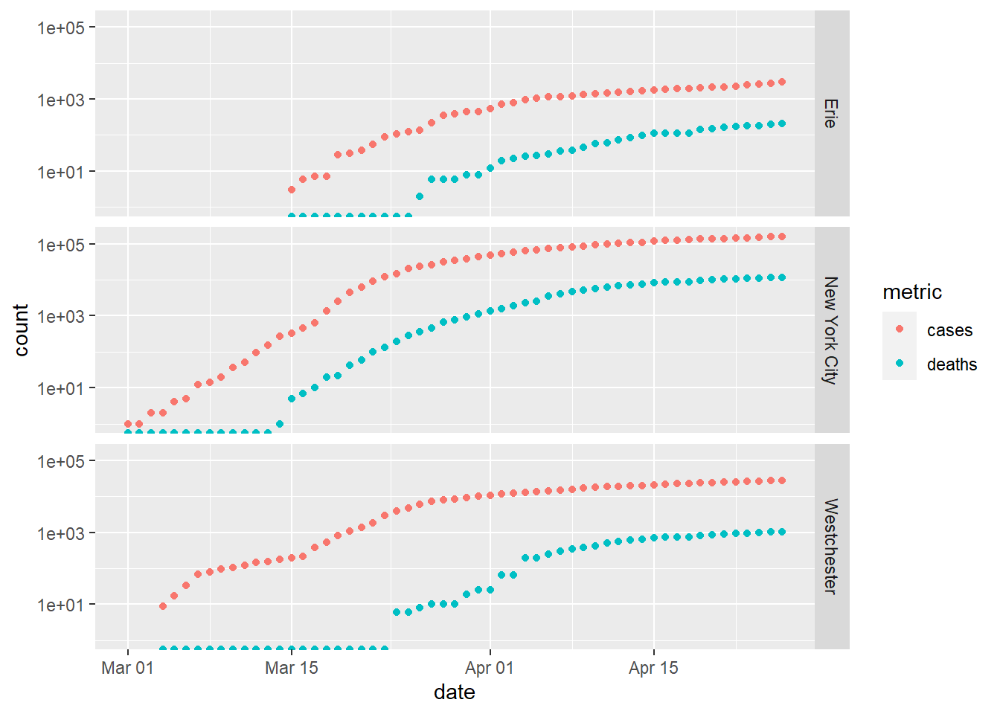 Note the common scales on the x and y axes.
Plotting counties as ‘rows’ of the graph emphasize temporal comparisons – e.g., the earlier onset of the pandemic in Westchester and New York City compared to Erie, and perhaps longer lag between new cases and deaths in Westchester.
Plotting countes as ‘columns’ emphasizes comparison between number of cases and deaths – there are many more cases in New York City than in Erie County.
p + facet_grid(cols=vars(county)) ## Warning: Transformation introduced infinite values in continuous y-axis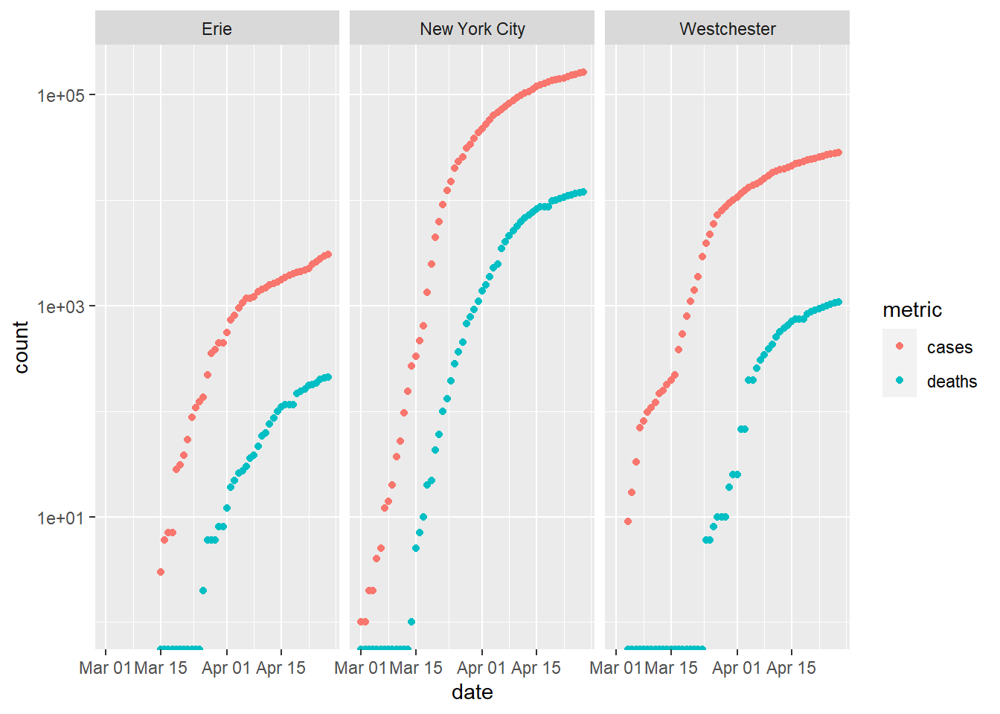
COVID-19 nationally
Setup
Summarize the total (maximum) number of cases in each county and state
county_summary <- us %>% group_by(county, state) %>% summarize( cases = max(cases), deaths = max(deaths) ) county_summary ## # A tibble: 2,914 x 4 ## # Groups: county [1,703] ## county state cases deaths ## <chr> <chr> <dbl> <dbl> ## 1 Abbeville South Carolina 33 0 ## 2 Acadia Louisiana 134 10 ## 3 Accomack Virginia 400 6 ## 4 Ada Idaho 664 17 ## 5 Adair Iowa 1 0 ## 6 Adair Kentucky 83 13 ## 7 Adair Missouri 12 0 ## 8 Adair Oklahoma 65 3 ## 9 Adams Colorado 1780 68 ## 10 Adams Idaho 3 0 ## # … with 2,904 more rowsNow summarize the number of cases per state
state_summary <- county_summary %>% group_by(state) %>% summarize( cases = sum(cases), deaths = sum(deaths) ) %>% arrange(desc(cases)) state_summary ## # A tibble: 55 x 3 ## state cases deaths ## <chr> <dbl> <dbl> ## 1 New York 318537 20365 ## 2 New Jersey 130969 7892 ## 3 Massachusetts 68087 4011 ## 4 Illinois 61627 2636 ## 5 California 55075 2238 ## 6 Pennsylvania 52082 2846 ## 7 Michigan 43782 4053 ## 8 Florida 36074 1412 ## 9 Texas 32312 892 ## 10 Connecticut 29512 2444 ## # … with 45 more rowsPlot the relationship between cases and deaths as a scatter plot
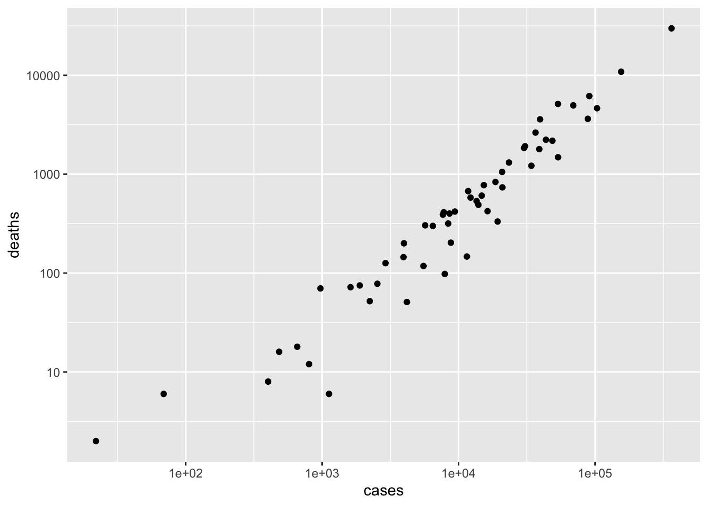
Create a ‘long’ version of the state summary. The transformations include making ‘state’ a factor with the ‘levels’ ordered from most- to least-affected state. This is a ‘trick’ so that states are ordered, when displayed, from most to least affected. The transformations also choose only the 20 most-affected states using
head(20).state_longer <- state_summary %>% mutate( ## this 'trick' causes 'state' to be ordered from most to ## least cases, rather than alphabetically state = factor(state, levels = state) ) %>% head(20) %>% # look at the 20 states with the most cases pivot_longer( c("cases", "deaths"), names_to = "metric", values_to = "count" ) state_longer ## # A tibble: 40 x 3 ## state metric count ## <fct> <chr> <dbl> ## 1 New York cases 318537 ## 2 New York deaths 20365 ## 3 New Jersey cases 130969 ## 4 New Jersey deaths 7892 ## 5 Massachusetts cases 68087 ## 6 Massachusetts deaths 4011 ## 7 Illinois cases 61627 ## 8 Illinois deaths 2636 ## 9 California cases 55075 ## 10 California deaths 2238 ## # … with 30 more rowsUse a dot plot to provide an alternative representation that is more easy to associated statsistics with individual states
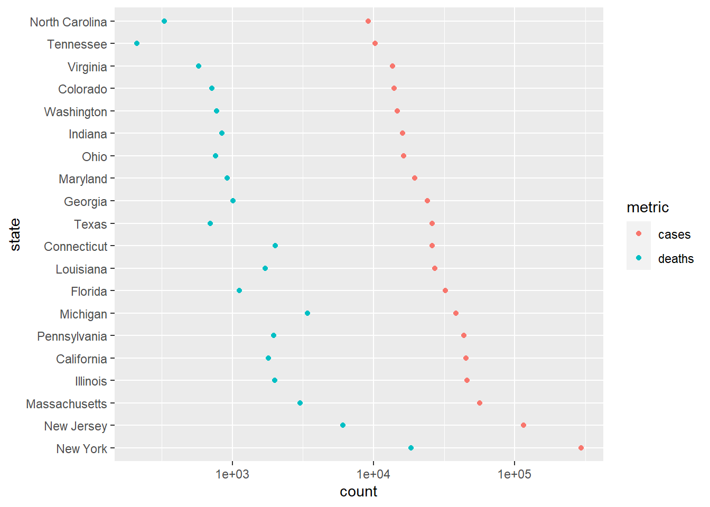
3.4 Day 18 Worldwide COVID data
Setup
Start a new script and load the packages we’ll use
library(readr) library(dplyr) library(ggplot2) library(tidyr) # specialized functions for transforming tibblesThese packages should have been installed during previous quarantines.
Source
CSSE at Johns Hopkins University, available on github
hopkins = "https://raw.githubusercontent.com/CSSEGISandData/COVID-19/master/csse_covid_19_data/csse_covid_19_time_series/time_series_covid19_confirmed_global.csv" csv <- read_csv(hopkins) ## Parsed with column specification: ## cols( ## .default = col_double(), ## `Province/State` = col_character(), ## `Country/Region` = col_character() ## ) ## See spec(...) for full column specifications.
‘Tidy’ data
The data has initial columns describing region, and then a column for each date of the pandemic. There are 266 rows, corresponding to the different regions covered by the database.
We want instead to ‘pivot’ the data, so that each row represents cases in a particular region on a particular date, analogous to the way the US data we have been investigating earlier has been arranged.
tidyr provides functions for manipulating a
tibbleinto ‘tidy’ format.tidyr::pivot_longer()takes a ‘wide’ data frame likecsv, and allows us to transform it to the ‘long’ format we are interested in.I discovered how to work with
pivot_longer()using its help page?tidyr::pivot_longerThe first argument represents columns to pivot or, as a convenience when these are negative values, columns we do not want to pivot. We do not want to pivot columns 1 through 4, so this argument will be
-(1:4).The
names_toargument is the column name we want to use to refer to the names of the columns that we do pivot. We’ll pivot the columns that have a date in them, so it makes sense to usenames_to = "date".The
values_toargument is the column name we want to use for the pivoted values. Since the values in the main part ofcsvare the number of cases observed, we’ll usevalues_to = "cases"
Here’s what we have after pivoting
csv %>% pivot_longer(-(1:4), names_to = "date", values_to = "cases") ## # A tibble: 27,398 x 6 ## `Province/State` `Country/Region` Lat Long date cases ## <chr> <chr> <dbl> <dbl> <chr> <dbl> ## 1 <NA> Afghanistan 33 65 1/22/20 0 ## 2 <NA> Afghanistan 33 65 1/23/20 0 ## 3 <NA> Afghanistan 33 65 1/24/20 0 ## 4 <NA> Afghanistan 33 65 1/25/20 0 ## 5 <NA> Afghanistan 33 65 1/26/20 0 ## 6 <NA> Afghanistan 33 65 1/27/20 0 ## 7 <NA> Afghanistan 33 65 1/28/20 0 ## 8 <NA> Afghanistan 33 65 1/29/20 0 ## 9 <NA> Afghanistan 33 65 1/30/20 0 ## 10 <NA> Afghanistan 33 65 1/31/20 0 ## # … with 27,388 more rowsWe’d like to further clean this up data
Format our newly created ‘date’ column (using
as.Date(), but with aformat=argument appropriate for the format of the dates in this data set)Re-name, for convenience, the
County/Regioncolumn as justcountry. This can be done withrename(country = "Country/Region")Select only columns of interest –
country,date,casesSome countries have multiple rows, because the data is a provincial or state levels, so we would like to sum all cases, grouped by
countryanddate
world <- csv %>% pivot_longer(-(1:4), names_to = "date", values_to = "cases") %>% mutate(date = as.Date(date, format = "%m/%d/%y")) %>% rename(country = "Country/Region") %>% group_by(country, date) %>% summarize(cases = sum(cases)) world ## # A tibble: 19,261 x 3 ## # Groups: country [187] ## country date cases ## <chr> <date> <dbl> ## 1 Afghanistan 2020-01-22 0 ## 2 Afghanistan 2020-01-23 0 ## 3 Afghanistan 2020-01-24 0 ## 4 Afghanistan 2020-01-25 0 ## 5 Afghanistan 2020-01-26 0 ## 6 Afghanistan 2020-01-27 0 ## 7 Afghanistan 2020-01-28 0 ## 8 Afghanistan 2020-01-29 0 ## 9 Afghanistan 2020-01-30 0 ## 10 Afghanistan 2020-01-31 0 ## # … with 19,251 more rowsLet’s also calculate
new_casesby country- Use
group_by()to perform thenew_casescomputation for each country - Use
mutate()to calculate the new variable - Use
ungroup()to remove the grouping variable, so it doesn’t unexpectedly influence other calculations - re-assign the updated
tibbleto the variableworld
- Use
Exploration
Use
group_by()andsummarize()to find the maximum (total) number of cases, andarrange() these indesc()`ending orderworld %>% group_by(country) %>% summarize(n = max(cases)) %>% arrange(desc(n)) ## # A tibble: 187 x 2 ## country n ## <chr> <dbl> ## 1 US 1158040 ## 2 Spain 217466 ## 3 Italy 210717 ## 4 United Kingdom 187842 ## 5 France 169053 ## 6 Germany 165664 ## 7 Russia 134687 ## 8 Turkey 126045 ## 9 Brazil 101826 ## 10 Iran 97424 ## # … with 177 more rows
Visualization
Start by creating a subset, e.g., the US
Use ggplot2 to visualize the progression of the pandemic
ggplot(us, aes(date, new_cases)) + scale_y_log10() + geom_point() + geom_smooth() + ggtitle(paste("Country:", country)) ## Warning: Transformation introduced infinite values in continuous y-axis ## Warning: Transformation introduced infinite values in continuous y-axis ## `geom_smooth()` using method = 'loess' and formula 'y ~ x' ## Warning: Removed 25 rows containing non-finite values (stat_smooth).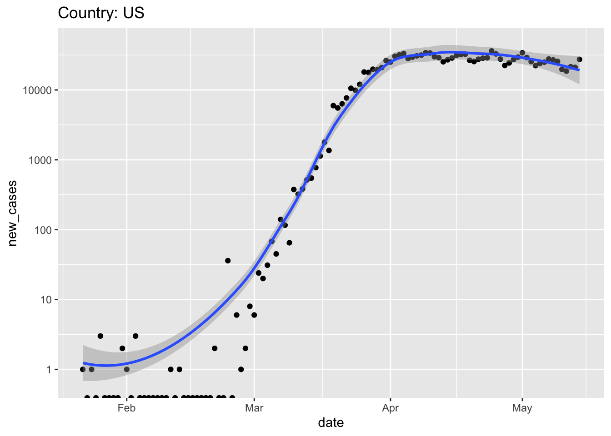
It seems like it would be convenient to capture our data cleaning and visualization steps into separate functions that can be re-used, e.g., on different days or for different visualizations.
write a function for data retrieval and cleaning
get_world_data <- function() { ## read data from Hopkins' github repository hopkins = "https://raw.githubusercontent.com/CSSEGISandData/COVID-19/master/csse_covid_19_data/csse_covid_19_time_series/time_series_covid19_confirmed_global.csv" csv <- read_csv(hopkins) ## 'tidy' the data world <- csv %>% pivot_longer(-(1:4), names_to = "date", values_to = "cases") %>% mutate(date = as.Date(date, format = "%m/%d/%y")) %>% rename(country = "Country/Region") ## sum cases across regions within aa country world <- world %>% group_by(country, date) %>% summarize(cases = sum(cases)) ## add `new_cases`, and return the result world %>% group_by(country) %>% mutate(new_cases = diff(c(0, cases))) %>% ungroup() }…and for plotting by country
plot_country <- function(tbl, view_country = "US") { country_title <- paste("Country:", view_country) ## subset to just this country country_data <- tbl %>% filter(country == view_country) ## plot country_data %>% ggplot(aes(date, 1 + new_cases)) + scale_y_log10() + geom_point() + ## add method and formula to quieten message geom_smooth(method = "loess", formula = y ~ x) + ggtitle(country_title) }Note that, because the first argument of
plot_country()is a tibble, the output ofget_world_data()can be used as the input ofplot_country(), and can be piped together, e.g.,world <- get_world_data() ## Parsed with column specification: ## cols( ## .default = col_double(), ## `Province/State` = col_character(), ## `Country/Region` = col_character() ## ) ## See spec(...) for full column specifications. world %>% plot_country("Korea, South")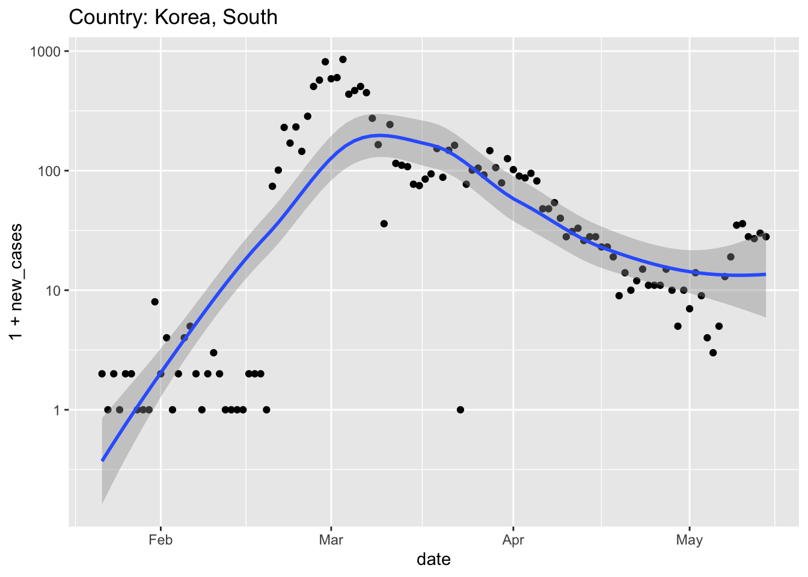
3.5 Day 19 (Friday) Zoom check-in
3.5.1 Logistics
Stick around after class to ask any questions.
Remember Microsoft Teams for questions during the week.
3.5.2 Review and trouble shoot (40 minutes)
Setup
library(readr)
library(dplyr)
library(tibble)
library(tidyr)
url <- "https://raw.githubusercontent.com/nytimes/covid-19-data/master/us-counties.csv"
us <- read_csv(url)Packages
install.packages()versuslibrary()- Symbol resolution:
dplyr::filter()
The tibble
- Compact, informative display
Generally, no rownames
mtcars %>% as_tibble(rownames = "model") ## # A tibble: 32 x 12 ## model mpg cyl disp hp drat wt qsec vs am gear carb ## <chr> <dbl> <dbl> <dbl> <dbl> <dbl> <dbl> <dbl> <dbl> <dbl> <dbl> <dbl> ## 1 Mazda RX4 21 6 160 110 3.9 2.62 16.5 0 1 4 4 ## 2 Mazda RX4 … 21 6 160 110 3.9 2.88 17.0 0 1 4 4 ## 3 Datsun 710 22.8 4 108 93 3.85 2.32 18.6 1 1 4 1 ## 4 Hornet 4 D… 21.4 6 258 110 3.08 3.22 19.4 1 0 3 1 ## 5 Hornet Spo… 18.7 8 360 175 3.15 3.44 17.0 0 0 3 2 ## 6 Valiant 18.1 6 225 105 2.76 3.46 20.2 1 0 3 1 ## 7 Duster 360 14.3 8 360 245 3.21 3.57 15.8 0 0 3 4 ## 8 Merc 240D 24.4 4 147. 62 3.69 3.19 20 1 0 4 2 ## 9 Merc 230 22.8 4 141. 95 3.92 3.15 22.9 1 0 4 2 ## 10 Merc 280 19.2 6 168. 123 3.92 3.44 18.3 1 0 4 4 ## # … with 22 more rows
Verbs
filter(): filter rows meeting specific criteriaselect(): select columnsummarize(): summarize column(s) to a single valuen(): number of rows in the tibble
mutate(): modify and create new columnsarrange(): arrange rows so that specific columns are in orderdesc(): arrange in descending order. Applies to individual columns
group_by()/ungroup(): identify groups of data, e.g., forsummarize()operationsus %>% ## group by county & state, summarize by MAX (total) cases, ## deaths across each date group_by(county, state) %>% summarize(cases = max(cases), deaths = max(deaths)) %>% ## group the _result_ by state, summarize by SUM of cases, ## deaths in each county group_by(state) %>% summarize(cases = sum(cases), deaths = sum(deaths)) %>% ## arrange from most to least affected states arrange(desc(cases)) ## # A tibble: 55 x 3 ## state cases deaths ## <chr> <dbl> <dbl> ## 1 New York 318537 20365 ## 2 New Jersey 130969 7892 ## 3 Massachusetts 68087 4011 ## 4 Illinois 61627 2636 ## 5 California 55075 2238 ## 6 Pennsylvania 52082 2846 ## 7 Michigan 43782 4053 ## 8 Florida 36074 1412 ## 9 Texas 32312 892 ## 10 Connecticut 29512 2444 ## # … with 45 more rowsungroup()to remove grouping
In scripts, it seems like the best strategy, for legibility, is to evaluate one verb per line, and to chain not too many verbs together into logical ‘phrases’.
## worst? state <- us %>% group_by(county, state) %>% summarize(cases = max(cases), deaths = max(deaths)) %>% group_by(state) %>% summarize(cases = sum(cases), deaths = sum(deaths)) %>% arrange(desc(cases)) ## better? state <- us %>% group_by(county, state) %>% summarize(cases = max(cases), deaths = max(deaths)) %>% group_by(state) %>% summarize(cases = sum(cases), deaths = sum(deaths)) %>% arrange(desc(cases)) ## best? county_state <- us %>% group_by(county, state) %>% summarize(cases = max(cases), deaths = max(deaths)) state <- county_state %>% group_by(state) %>% summarize(cases = sum(cases), deaths = sum(deaths)) %>% arrange(desc(cases))
Cleaning: tidyr::pivot_longer()
casesanddeathsare both ‘counts’, so could perhaps be represented in a single ‘value’ column with a corresponding ‘key’ (name) column telling us whether the count is a ‘case’ or ‘death’erie %>% pivot_longer( c("cases", "deaths"), names_to = "event", values_to = "count" ) ## # A tibble: 100 x 6 ## date county state fips event count ## <date> <chr> <chr> <chr> <chr> <dbl> ## 1 2020-03-15 Erie New York 36029 cases 3 ## 2 2020-03-15 Erie New York 36029 deaths 0 ## 3 2020-03-16 Erie New York 36029 cases 6 ## 4 2020-03-16 Erie New York 36029 deaths 0 ## 5 2020-03-17 Erie New York 36029 cases 7 ## 6 2020-03-17 Erie New York 36029 deaths 0 ## 7 2020-03-18 Erie New York 36029 cases 7 ## 8 2020-03-18 Erie New York 36029 deaths 0 ## 9 2020-03-19 Erie New York 36029 cases 28 ## 10 2020-03-19 Erie New York 36029 deaths 0 ## # … with 90 more rows
Visualization
ggplot(): where does the data come from?aes(): what parts of the data are we going to plot- a tibble and
aes()are enough to know the overall layout of the plot
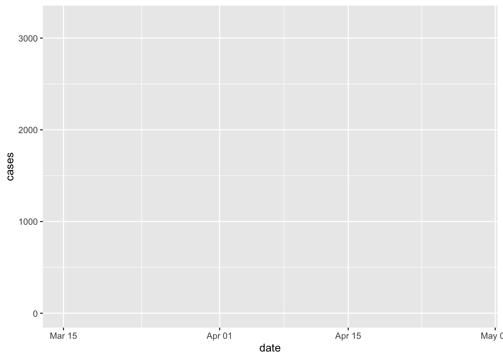
- a tibble and
geom_*(): how to plot the aesthetics- ‘add’ to other plot components
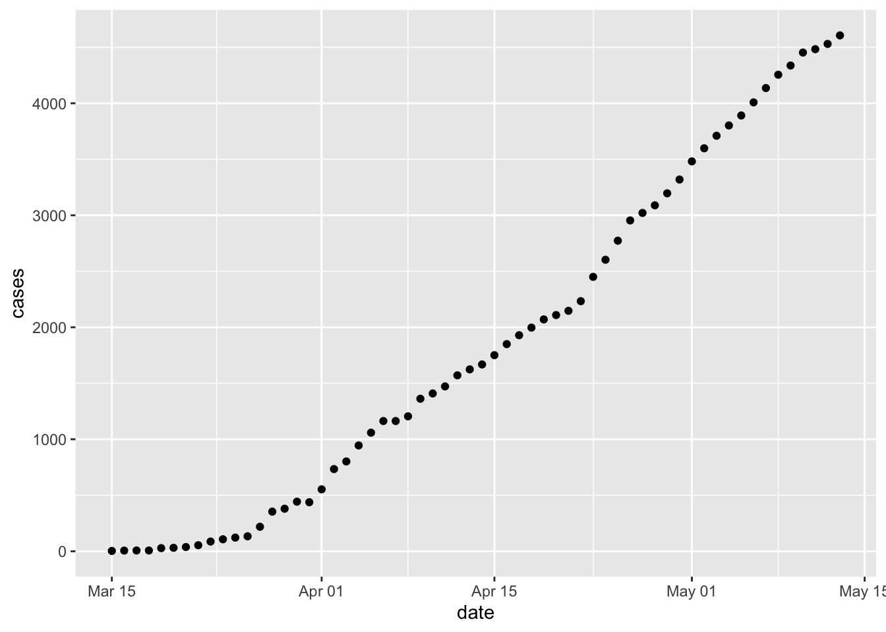
Additional ways to decorate the data
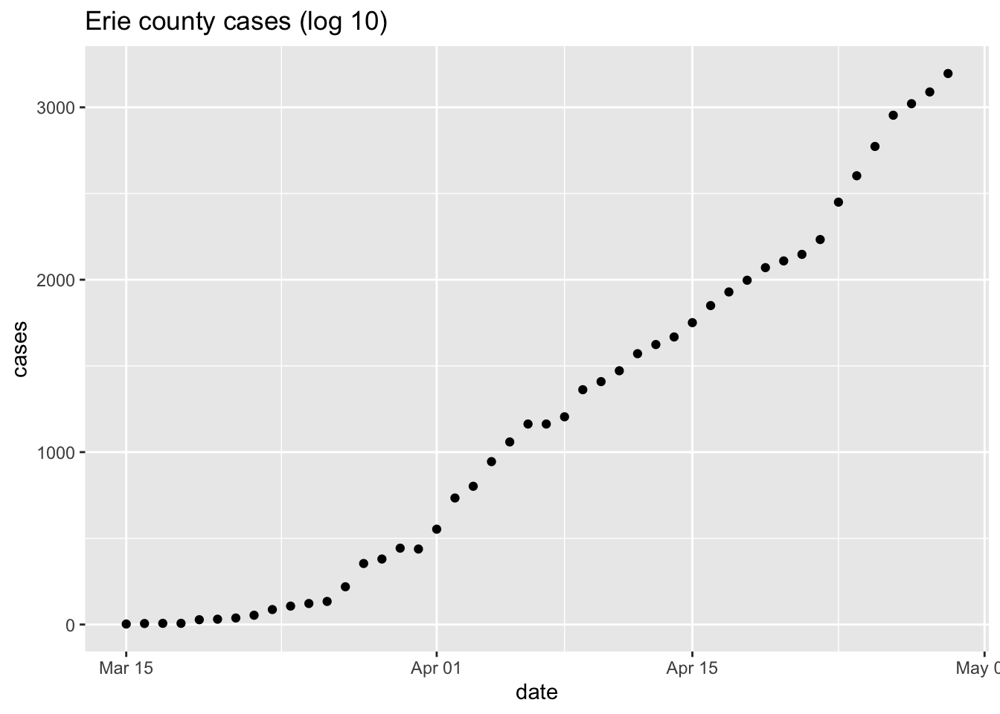
Plots can be captured as a variable, and subsequently modified
p <- ggplot(erie, aes(date, cases)) + geom_point() + ggtitle("Erie county cases") p + scale_y_log10() + ggtitle("Erie county cases (log 10)")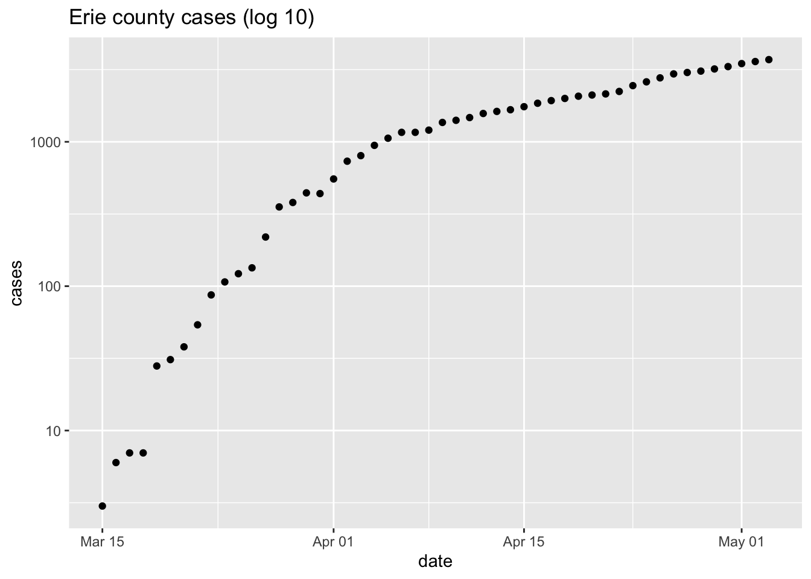
Global data
get_world_data()get_world_data <- function() { ## read data from Hopkins' github repository hopkins = "https://raw.githubusercontent.com/CSSEGISandData/COVID-19/master/csse_covid_19_data/csse_covid_19_time_series/time_series_covid19_confirmed_global.csv" csv <- read_csv(hopkins) ## 'tidy' the data world <- csv %>% pivot_longer(-(1:4), names_to = "date", values_to = "cases") %>% mutate(date = as.Date(date, format = "%m/%d/%y")) %>% rename(country = "Country/Region") ## sum cases across regions within aa country world <- world %>% group_by(country, date) %>% summarize(cases = sum(cases)) ## add `new_cases`, and return the result world %>% group_by(country) %>% mutate(new_cases = diff(c(0, cases))) %>% ungroup() }plot_country()plot_country <- function(tbl, view_country = "US") { country_title <- paste("Country:", view_country) ## subset to just this country country_data <- tbl %>% filter(country == view_country) ## plot country_data %>% ggplot(aes(date, 1 + new_cases)) + scale_y_log10() + geom_point() + ## add method and formula to quieten message geom_smooth(method = "loess", formula = y ~ x) + ggtitle(country_title) }- functions to encapsulate common operations
typically saved as scripts that can be easily
source()’ed into Rworld <- get_world_data() ## Parsed with column specification: ## cols( ## .default = col_double(), ## `Province/State` = col_character(), ## `Country/Region` = col_character() ## ) ## See spec(...) for full column specifications. world %>% plot_country("US")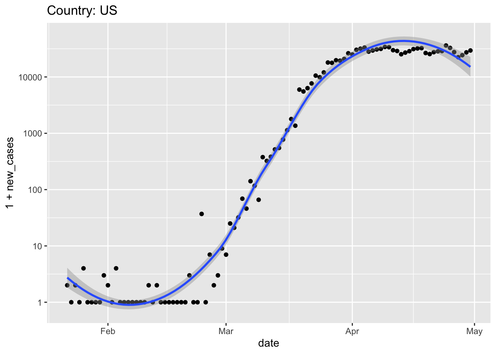
3.5.3 Weekend activities (15 minutes)
- Explore global pandemic data
- Critically reflect on data resources and interpretation
3.6 Day 20 Exploring the course of pandemic in different regions
Use the data and functions from quarantine day 18 to place the pandemic into quantitative perspective. Start by retrieving the current data
Start with the United States
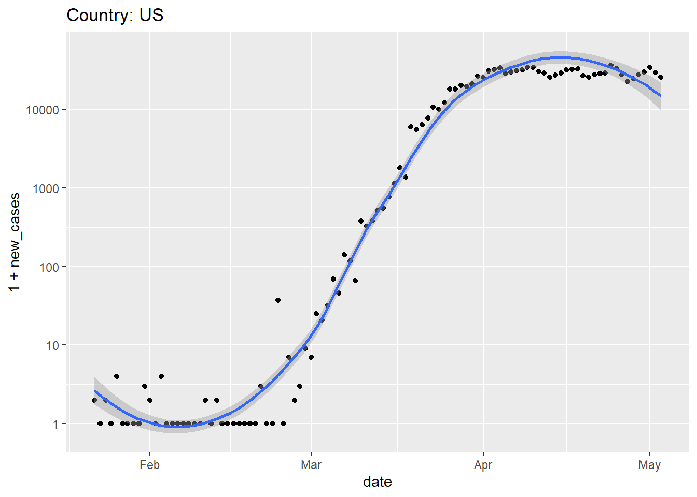
When did ‘stay at home’ orders come into effect? Did they appear to be effective?
When would the data suggest that the pandemic might be considered ‘under control’, and country-wide stay-at-home orders might be relaxed?
Explore other countries.
The longest trajectory is probably displayed by China
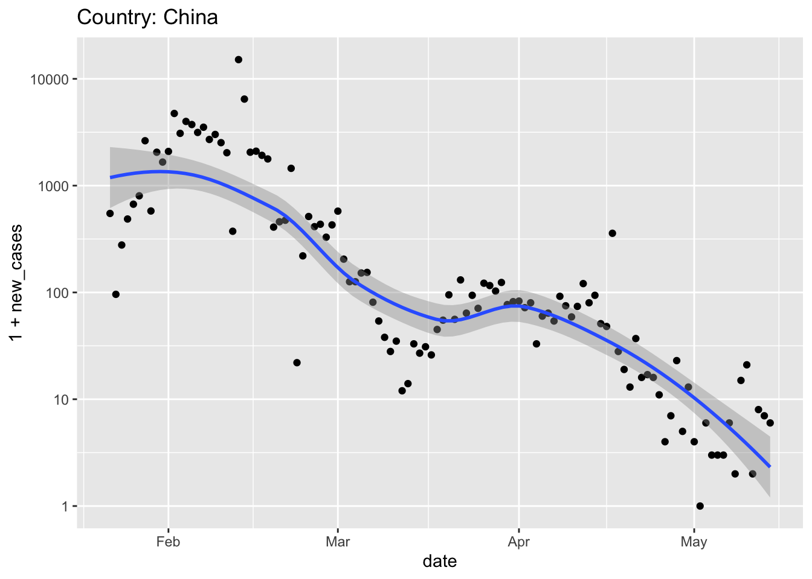
Italy and Spain were hit very hard, and relatively early, by the pandemic
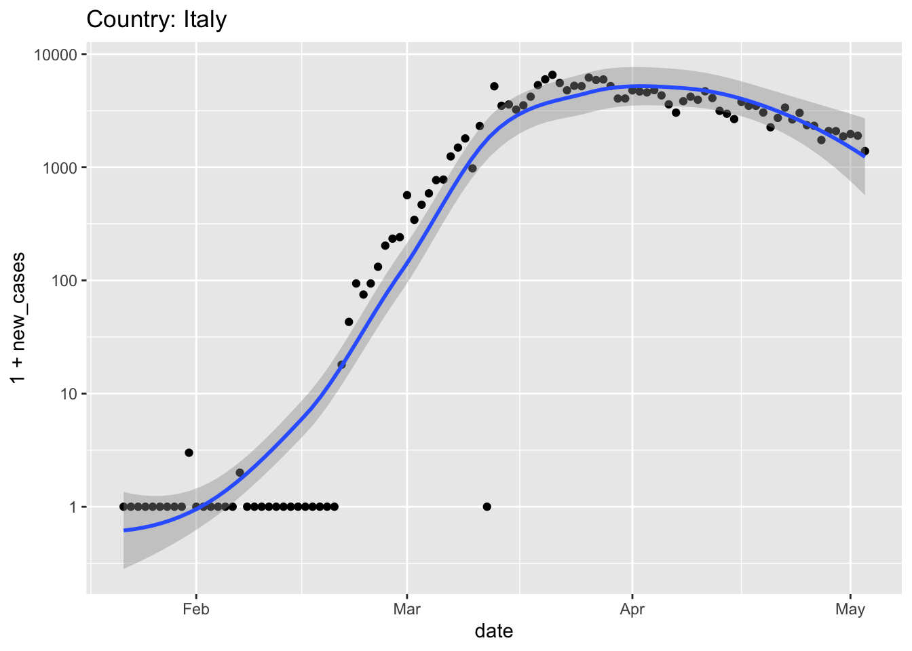
world %>% plot_country("Spain") ## Warning in self$trans$transform(x): NaNs produced ## Warning: Transformation introduced infinite values in continuous y-axis ## Warning in self$trans$transform(x): NaNs produced ## Warning: Transformation introduced infinite values in continuous y-axis ## Warning: Removed 1 rows containing non-finite values (stat_smooth). ## Warning: Removed 1 rows containing missing values (geom_point).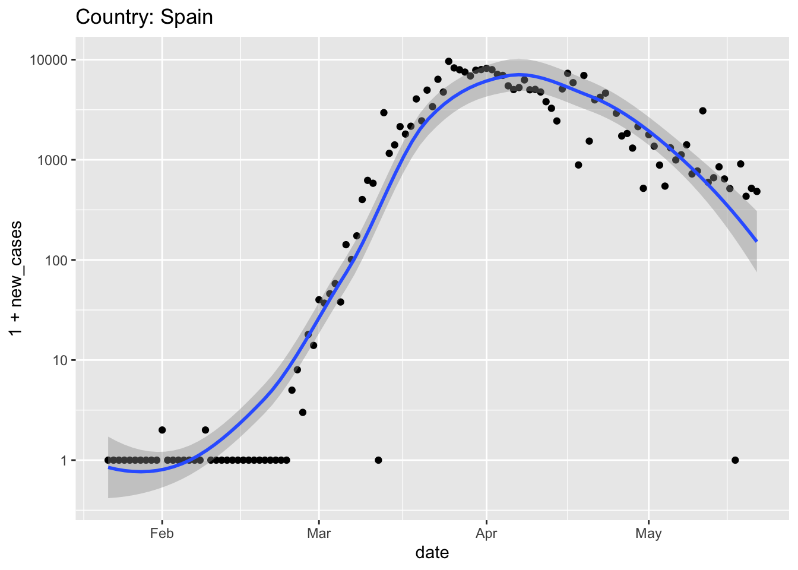
Austria relaxed quarantine very early, in the middle of April; does that seem like a good idea?
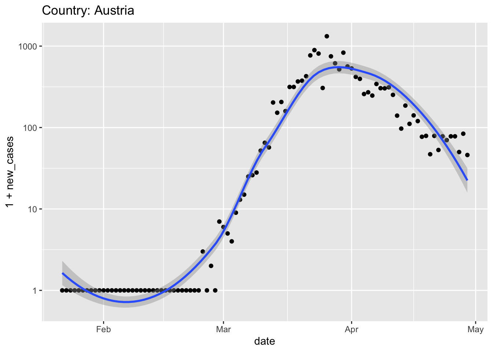
Germany also had strong leadership (e.g., chancellor Angela Merkel provided clear and unambiguous rules for Germans to follow, and then self-isolated when her doctor, whom she had recently visited, tested positive) and an effective screening campaign (e.g., to make effective use of limited testing resources, in some instances pools of samples were screened, and only if the pool indicated infection were the individuals in the pool screened.
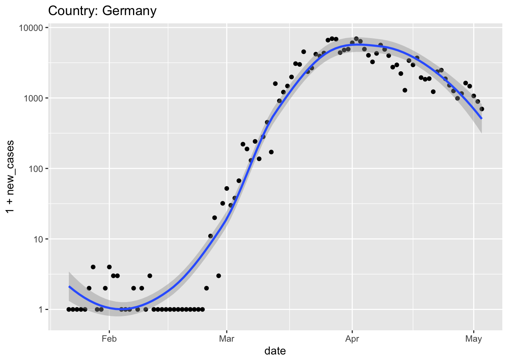
At the start of the pandemic, Singapore had excellent surveillance (detecting individuals with symptoms) and contact tracing (identifying and placing in quarantine those individuals coming in contact with the infected individuals). New cases were initially very low, despite proximity to China, and Singapore managed the pandemic through only moderate social distancing (e.g., workers were encouraged to operate in shifts; stores and restaurants remained open). Unfortunately, Singaporeans returning from Europe (after travel restrictions were in place there) introduced new cases that appear to have overwhelmed the surveillance network. Later, the virus spread to large, densely populated migrant work housing. Singapore’s initial success at containing the virus seems to have fallen apart in the face of this wider spread, and more severe restrictions on economic and social life were imposed.
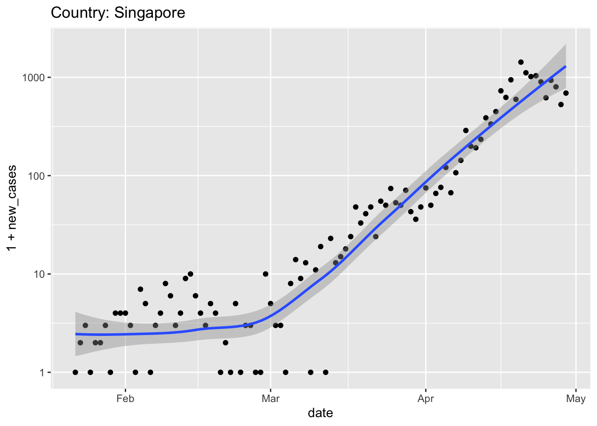
South Korea had a very ‘acute’ spike in cases associated with a large church. The response was to deploy very extensive testing and use modern approaches to tracking (e.g., cell phone apps) coupled with transparent accounting. South Korea imposed relatively modest social and economic restrictions. It seems like this has effectively ‘flattened the curve’ without pausing the economy.
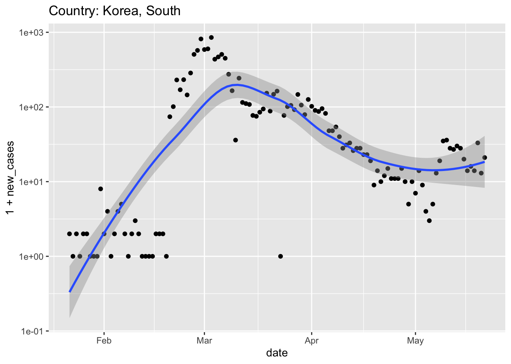
Where does your own exploration of the data take you?
3.7 Day 21 Critical evaluation
The work so far has focused on the mechanics of processing and visualizing the COVID-19 state and global data. Use today for reflecting on interpretation of the data. For instance
To what extent is the exponential increase in COVID presence in early stages of the pandemic simply due to increased availability of testing?
How does presentation of data influence interpretation? It might be interesting to visualize, e.g., US cases on linear as well as log scale, and to investigate different ways of ‘smoothing’ the data, e.g., the trailing 7-day average case number. For the latter, one could write a function
and apply this to
new_casesprior to visualization. Again this could be presented as log-transformed or on a linear scale.Can you collect additional data, e.g., on population numbers from the US census, to explore the relationship between COVID impact and socioeconomic factors?
How has COVID response been influenced by social and political factors in different parts of the world? My (Martin) narratives were sketched out to some extend on Day 20. What are your narratives?
What opportunities are there to intentionally or unintentionally mis-represent or mis-interpret the seemingly ‘hard facts’ of COVID infection?